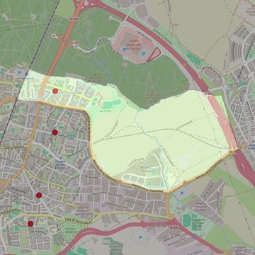

San Benito Menni
- Arciprestazgo
- Fuenlabrada
- Población
- Fuenlabrada
- Dirección postal
- c/ Méjico, 14
- Código postal
- 28945
- Extensión
- 2,47 km² (247 ha)
- Teléfono
- 916 901 235
- Correo electrónico
- sanbenitomenni-fuenlabrada@diocesisgetafe.es
- Información demográfica
- De la parroquia · De la población (Fuenlabrada) · Del arciprestazgo (Fuenlabrada)


Descargar mapaLímites según decreto
“Partiendo de la confluencia de la Avenida de España con el ferrocarril Madrid-Portugal, arrancan por el eje de las vías de dicho ferrocarril (en dirección noreste); continúan por los límites de los términos municipales de Fuenlabrada y Leganés (en dirección este), por los límites de los términos municipales de Fuenlabrada y Getafe (en dirección sureste), por los límites del parque de la Avanzada (incluyendo el citado parque y en dirección oeste), por el eje de la Pista de Circunvalación (en dirección noroeste), por el eje de la Avenida de la Hispanidad y de la Avenida de España (en dirección oeste) hasta la confluencia con el ferrocarril Madrid-Portugal, punto de partida”. (Decreto de erección de 25-5-2000; Boletín Oficial, Junio-2000, pág. 535-536)